| PHRYGANA | Fauna | Flora | Galles | liste des espèces |
contact -
info - commentaires phrygana1 (at) gmail.com |
| Particularités crétoises | nouveautés | Mines | ressources naturelles |
| Uromenus (Steropleurus) elegans (Fischer 1853) |
| 136 | Fauna | ORTHOPTERA | BRADYPORIDAE | Uromenus Bolivar 1878 |
|
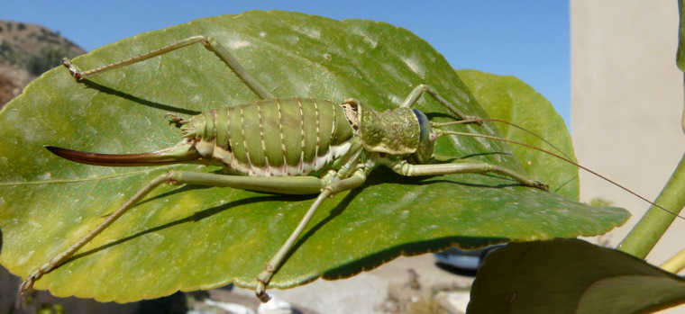 Uromenus elegans Melambes (Agios Giorgos) 11 juin 2010 |
| Longueur du corps: de 25 à 30 mm |
| La couleur de fond est verte, parfois vert grisâtre, brun clair à brun grisâtre. Bande blanche sur le côté de l'abdomen. Ventre blanchâtre. Tegmina blanc brunâtre avec des taches noires. Antennes très longues jaune verdâtre. Oviscapte légèrement courbé vers le haut. Cerques du mâle avec une dent interne pointue de couleur très foncée. |
| Phytophage: arbres fruitiers (Citrus sp.) petits buissons. |
| Période adulte: mai juin juillet août |
| Statut en Crète: indigène |
| Biotopes en Crète: phrygana, vieilles olivaies, bords de chemins, champs abandonnés, garrigues. |
| Altitudes: 0 - 600 m |
| Distribution: Italie, Sicile, Grèce |
| Note: Les adultes viennent parfois à la lumière. |
|
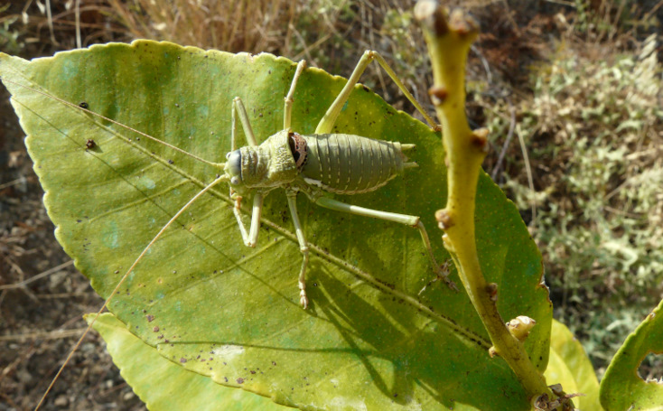 Uromenus elegans Melambes (Agios Giorgos) 19 juin 2010 |
|
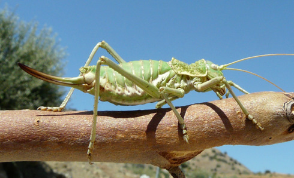
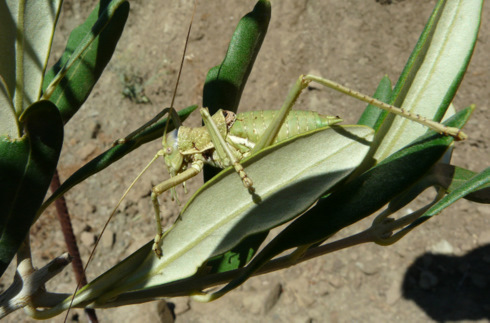 Uromenus elegans Melambes (Agios Giorgos) 23 juillet 2009 |
|
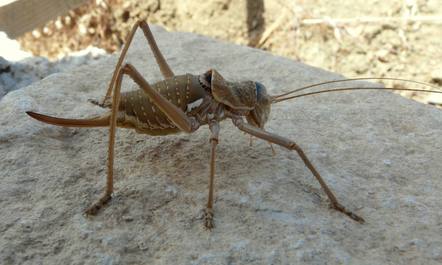 Uromenus elegans Melambes (Agios Giorgos) 16 mai 2010 |
|
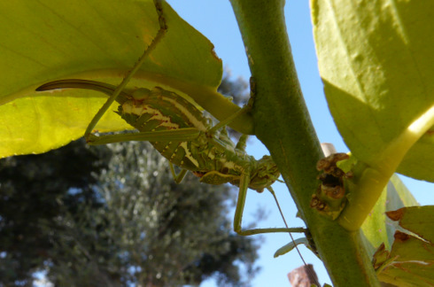
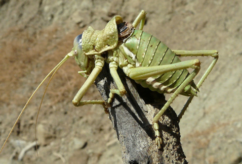 Uromenus elegans Melambes (Agios Giorgos) 20 mai 2010 Uromenus elegans Melambes (Agios Giorgos) 22 juillet 2009 |
|
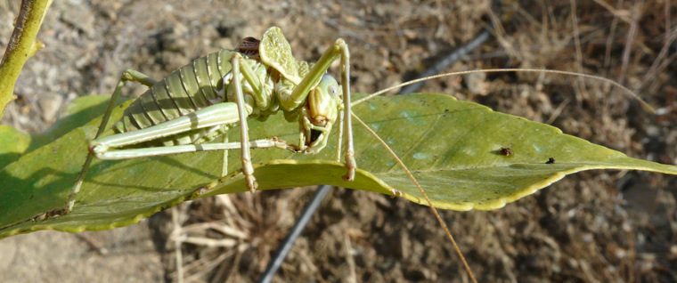 Uromenus elegans Melambes (Agios Giorgos) 19 juin 2010 |
|
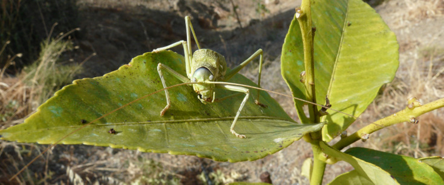 Uromenus elegans Melambes (Agios Giorgos) 19 juin 2010 |
|
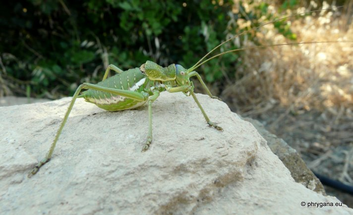 Uromenus elegans Melambes (Agios Giorgos) 16 juin 2012 |
|
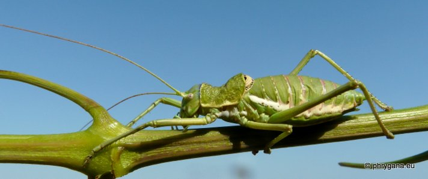 Uromenus elegans Melambes (Agios Giorgos) 16 juin 2012 |
|
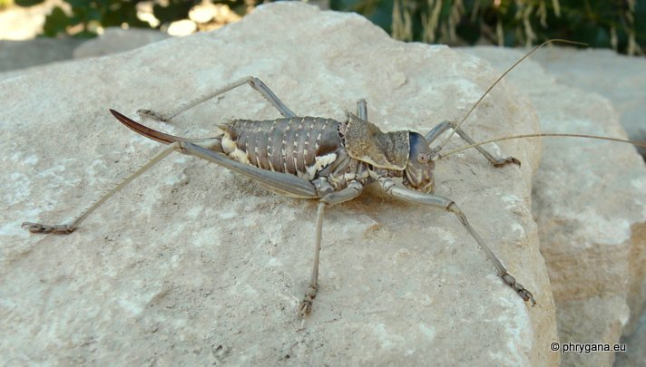 Uromenus elegans Melambes (Agios Giorgos) 20 juillet 2012 |
| 25 août 2012 |
| © paul fontaine -- © Phrygana.eu 2007 -- 2013 |